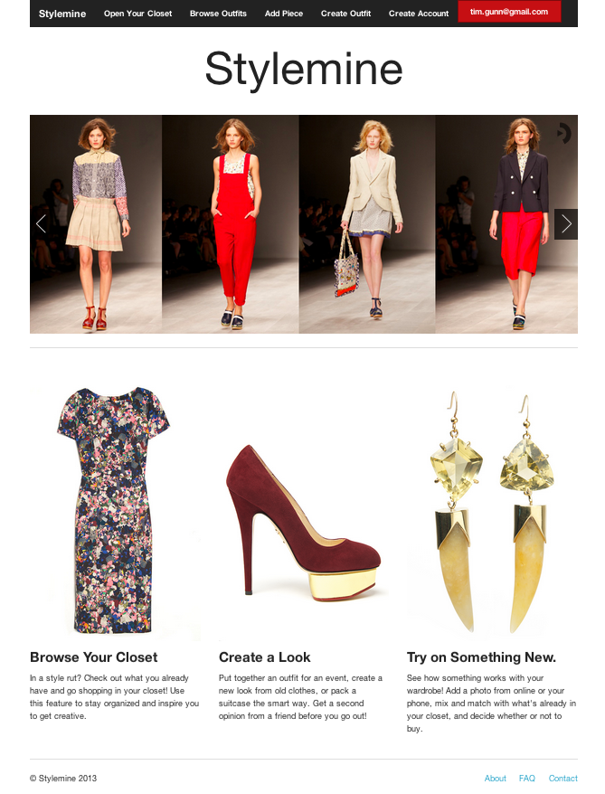
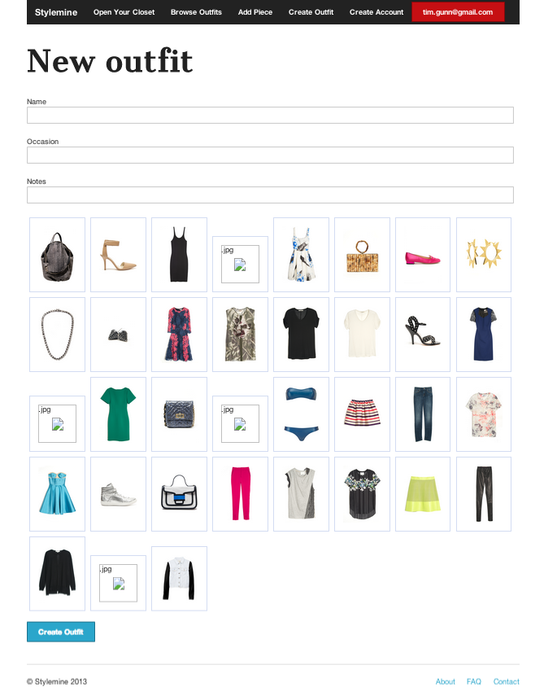
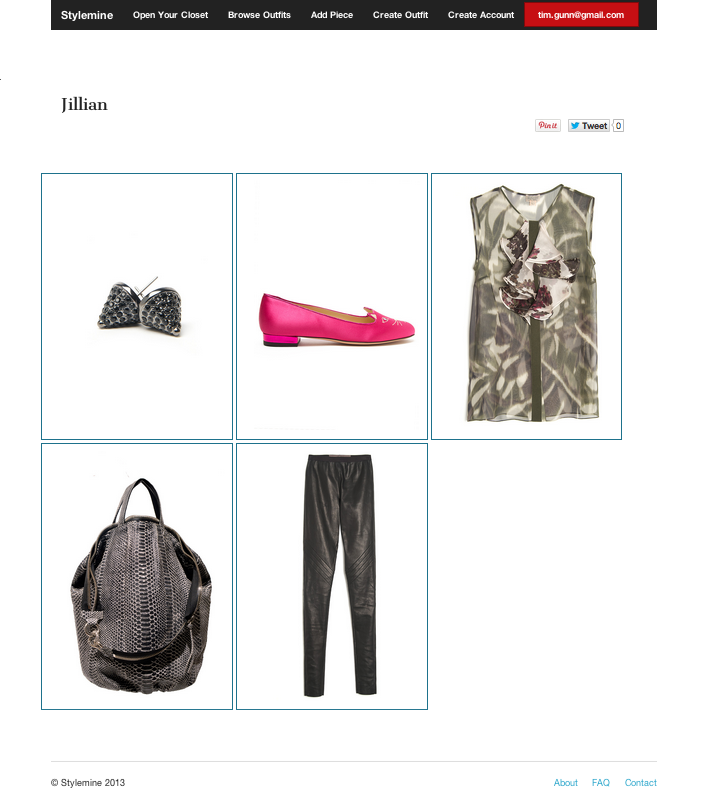
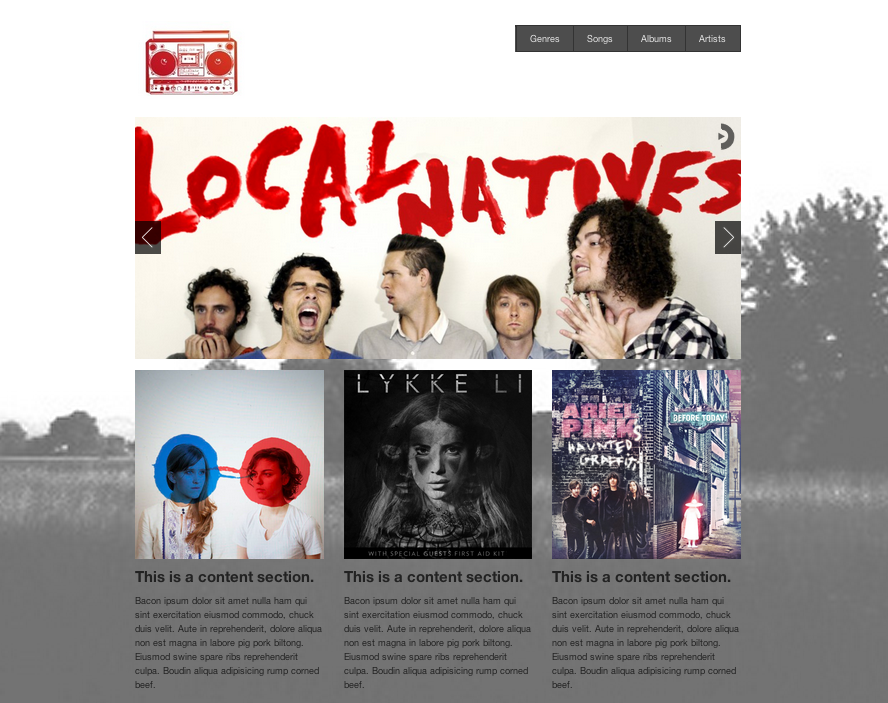
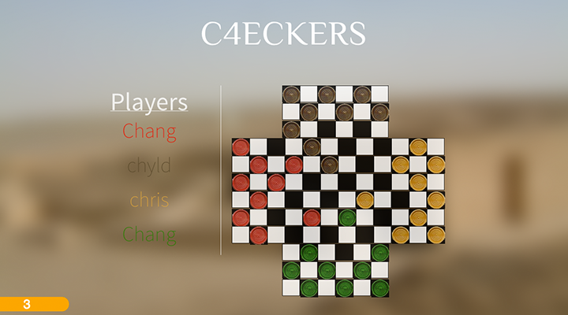
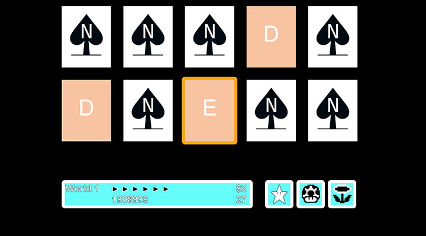

Jillian Youngblood
Web Developer
PARALLAX UNIVERSE
I do:
Ruby, Rails, JSON
Javascript
jQuery
HTML5, CSS3



Stylemine helps you create fresh looks from your closet and "try on" new pieces before you buy them.
Recent Work
Front-End and Back-End Development
Oh, and you can see my last selected Instagram pictures on the left.
- 
- 
- 